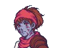

Put an end to this conflict
Ellerie (Ellerie POV)
Yours truly, a former bureaucrat, now
Chieftain of Irinde and soon, most of
the Crescent. I refuse to fall here.
Wisp (Ellerie POV)
Why do I feel so melancholic?
Is it a fear of impending death?
Guard (Ellerie POV)
A soldier from Irinde who fights for
Irinde. I could not ask for anyone
more capable to stand with me.
He Who Chops (Ellerie POV)
Doesn't speak much, doesn't ask a lot
of questions and follows orders to the
letter. My favourite kind of underling.
Potato (Ellerie POV)
I only promoted him because I knew
him, but he turned out to be quite
suited to leadership. And corruption.
Maurice (Ellerie POV)
Maurice, Maurice, Maurice.
Nothing will save you from my wrath,
not these former allies you've turned.
Tower (Ellerie POV)
Tower... Should I have done something
different? Should I have had you killed
when the opportunity arose? Should I?
Oren (Ellerie POV)
I let you go from your position peacefully.
I never wanted you harmed. But looks
like the feeling is no longer mutual.
Nerysa (Ellerie POV)
Nerysa, you snake. I knew you did
not like me, but I thought you better
than to attempt assassination.
Unari (Ellerie POV)
I knew this treachery would come
sooner or later, but right now?
Right after my greatest victory?
Rosswick (Ellerie POV)
Your place is in the past, you
miserable old sack of bones.
Meat Man (Ellerie POV)
Who?
Fate Frier (Ellerie POV)
You won't be meeting with
a good fate, that's for sure.
Oriana (Oriana POV)
I am doing the right thing. For the
Cerulean Crescent. For everyone.
But is it the right thing for me?
Ellerie (Oriana POV)
I never intended things to go this far.
I don't want this to be how it all ends.
Wisp (Oriana POV)
Is there someone there?
Guard (Oriana POV)
More monster than woman. I didn't know
a mere human could become so mighty.
Regardless, she will fall against so many.
He Who Chops (Oriana POV)
A poor fool who has to
die for Ellerie's sake.
Potato (Oriana POV)
This man always gave me an odd
feeling. I don't mean to discriminate,
but I suspect I will not mourn him.
Maurice (Oriana POV)
He has a gleeful look upon his
delightfully stabbable face.
Tower (Oriana POV)
Tower seems to feel none of the
hesitation I do, but I suspect his
heart also isn't quite in it.
Oren (Oriana POV)
Are your actions as altruistic as they
claim, Oren? Is it truly not personal
resentment that leads you here?
Nerysa (Oriana POV)
She probably wants to make up for what
the creatures did, partially by her work.
I wonder what Lindros feels right now.
Unari (Oriana POV)
She feels no love for Ellerie, that
much is certain. To her, a heavy
weight is being lifted over her town.
Rosswick (Oriana POV)
I know little about this man allegedly
famous back in his day. All I know
is that he shall help us slay her.
Meat Man (Oriana POV)
I remember buying some skewers
from him. He has lost everything.
Fate Frier (Oriana POV)
Even the street vendors hold a
grudge that cannot be resolved
with anything except bloodshed.
Frostfires
An adventuring band that made their
fortune pillaging artifacts in the White
Wastes. Not immune to fire or the cold.
The Guild
Various merchants and artisans that
make up the bulk of the Guild. Say
what you will, their skill is undeniable.
Cormorants
An established adventuring band whose
battle cry is always “fighting for
freedom” even when it makes no sense.
Saltsworn
One of the biggest adventuring guilds on
the Crescent. Trades quality for quantity.
Glade Gallant
The Iron Prince's mounted division and
most trusted fighters. Maintaining the
mounts necessary is becoming very costly.
Disciple
Extremists of the Disciples of Elis out
to serve 'divine will' or some nonsense.
Dreadlich III
A perfectly average traveller on
the Crescent. They have a very
interesting choice of headwear.
(Tower dies.)
If He Who Chops survived
(Tower kills Maurice.)
(Maurice dies.)
(Krynia untransforms.)
Mother, Grandfather, why?
Why did you have to do this?
Why did you kill her? Why did
you put me into this position?

kryniaRosswick, One Last Job
Unwilling to leave the Crescent which he has
called home for decades, Rosswick was cut
to pieces by the enraged warriors of Irinde.
His efforts in the assassination affected the
Crescent more than his adventuring career.
The Greatest Guard
There was no warrior more feared than her
by Ellerie's enemies. Some claim she is Elis's
punishment for the world's sins, others say
she is a malevolent god reborn. Word of her
very arrival has made armies flee the field.
The Legend Who Never Was
She may have died young, but her incredible
feats of slaying the Cold Caller in single combat
and defeating an army of knights would form
the basis for the folk hero “Lan the Lance".
Maurice, Doomed Loyalist
Perhaps it was a mercy for him to die on the Crescent instead of seeing the destruction of his Kingdom, his king and everything that he fought for, under Ellerie's brutal conquest.
As one of his few trusted servants, Maurice's king sorely missed his services. With loyalists being a rare commodity, it was not long before the Great Houses tore the Kingdom apart.
Sorbet, Two for One
The Sorbets argued much over how their time should be distributed, but finally settled. One week beating people into meaty chunks on the orders of Ellerie, the other week writing about the value of life and living.
The Sorbets argued much over how their time should be distributed, but finally settled. One week in Irinde's library uncovering the secrets of their existence, the other week committing murders authorised by Krynia.
Empress, the [Title too long]
Default
The Empress's territory was quickly invaded by the settlers' expansion, which she did not take kindly to. Dozens of victims later, a manhunt was called and the self-proclaimed sovereign's sovereignty was finally put to rest.
If Vermillion ascended
The Empress knew her days were numbered once the settlers expanded inland, yet was too prideful to flee. She entered the Gate, hoping that if she failed as Vermillion did, she'd still be granted the powers to fight off the invaders.
Default
The Empress spent many more years on the verge of ascension, yet she still wavers, unable to bring up the courage to cross that final threshold. Perhaps it will take the end of her lifespan for her to take that ultimate risk.
If Vermillion ascended
Vermillion's fate deterred Empress from seeking ascension. She turned her eyes towards more mortal desires, bringing her empire into reality. She carved a little kingdom for her people into the middle of the chaos enveloping the coast.
Dazzledart, Retired Killer
The life of a “Master Assassin” was not as
thrilling as Dazzledart hoped. Tired of Ellerie's
employ, she returned to the Crescent only to
find her home replaced by farms and fields.
At least she has her hoard of gold to spend.
Dazzledart, Yellow Storm
Dazzledart would find there is little demand for
a Master Assassin. She rebranded to a Master
Mercenary, but it just wasn't the same. A few
more years on the road was enough for her
to return to the Crescent, searching for home.
Berd
Berd searched for years, but was never
able to find Locust. Berd found himself
pillaging once more, but this time as part
of Ellerie's army. He rose up the ranks and
earned a noble title, but he couldn't forget.
Big Berd & Loc, Mythical Duo
Locust was drawn to the promise of glory
on the Mainland, and dragged Berd with
her. The duo became legendary for their
feats of miraculous survival and became
the subject of many rags-to-riches tales.
Berd
Berd searched for years, but was never
able to find Locust. In his grief, Berd
devoted himself to his studies. He soon
became the greatest Archsage of his era,
yet Locust's loss was no less keenly felt.
Big Berd & Loc, Legendary Duo
Berd tried to ease Locust's boredom with
life in Irinde by having her recover ancient
tablets for research. He didn't expect her
to rediscover a lost type of magic which
they became pioneers of, “cultivation.”
Gil Goldfist, Cursed Scion
Default
Gil was determined to escape the fate of his ancestors, who'd all died early deaths. After almost choking to death on a steak, he paid for security to ensure he was safe at all times. His security killed him to take his gold.
If Level 10+
Gil refused to let the curse which befell his ancestors scare him any longer. He was a rising star among Ellerie's officers, before falling prey to an ambush. Many mourned the potential which had been cut short.
Default
Gil was determined to escape the fate of his ancestors, who'd all died early deaths. After almost dying in a botched mugging, he shut himself away in a lavish home built for himself. The house collapsed and killed him instantly.
If Level 10+
Gil refused to let the curse which befell his ancestors scare him any longer. With his newfound courage, he led many expeditions to conquer the wilderness for the Crescent. He was accidentally killed in wage dispute.
Helisent, Full-time Adviser
Helisent intended her stint with Ellerie to be a
bouncing pad towards greater opportunities,
but with said opportunities being crushed one
by one under Ellerie's war machine, she
begrudgingly stayed on as a consultant.
Helisent, Freelance Adviser
Helisent leveraged her time in Ellerie's service
to become an advisor to a minor noble house.
Tales of her genius grew alongside tales of
her disloyalty as she frequently found better
employment. A bitter client had her executed.
Caloogo, Tragic Hero
Caloogo rescued a child on the road, who when told Caloogo was the spirit of a hero, begged him to help his town. Unfortunately, said town was under siege by Ellerie's army. Caloogo died a death fitting for a true hero.
Caloogo told everyone he met he was the returned spirit of a fictional hero, and why wouldn't everyone believe him? His endless energy and willingness to do good made him a celebrity to the people of the Crescent.
Xeo, Piteous Poet
Xeo followed Ellerie to the Mainland to fight for his lost love, but his heart was never really in it. He was killed by an unexpected arrow while distracted, composing another melancholy poem.
Xeo stumbled through day after day, until one day, he disappeared. The collection of poems he left behind would be studied by students for generations to come.
Caloogo, Adventure Awaits & Xeo, Fresh Start
The pair did not travel far before they were embroiled in the struggles of the Mainland. They accidentally started a minor rebellion in their need to do what's right, and cemented their place in history as heroes of the people.
Caloogo's enthusiasm did much to raise even Xeo's spirits. They had many odd adventures in their travels, all of which Xeo carefully documented. “The Travellings of Caloogo and Xeo" was an insightful manuscript into that era.
Zububai, a Deity Reborn
Zububai remained in Ellerie's service just to
see what might happen. She saw the heights
of Ellerie's empire and its inevitable collapse.
In the aftermath, there was plenty of
opportunity to cultivate a cult of her own.
Zububai, Too Many Faces
Zububai disappeared after the war. She
reappeared years later, then disappeared,
then reappeared, and so on for centuries,
under a new identity each time. She has
been a prophet, a hero, an inventor, a...
Zububai, the Returned
If Zububai reached S-rank in dark magic
Zububai followed Elis's footsteps back to the upper realms and remained a wanderer. She wonders why Qiulan and the rest cared when this original world is, at its core, no different from the one they escaped.
Unari, Lost the Gamble
With Unari dead and discredited, Frosthaven
quickly fell into Ellerie's hands. The city and
the Frostfires still quietly commemorate her
for what she put on the line to fight for them.
Unari, Sleazy Hero
In the wake of Ellerie's death, Unari found a
a new demanding opponent, one with little
restraint. Rallying the eastern coast to her side,
Unari was the last bastion of preventing the
Dragon from consuming the entire Crescent.
Ivadne, Frozen Fist
Ivadne quickly became known as the most
uncompromising of Ellerie's generals. She
led the army that crushed the Capital and
took particular delight in burning the lands
of those who condemned her Princess.
Ivadne, Icy Insurgent
With the Crescent useless to her, Ivadne
returned to the Mainland. She learned to
discard the mentality of a knight and stir up
discontent from the shadows. It would not
be long before she got the war she wanted.
Lilac, Idle Sectmaster
With Tower gone and unsure of what to do
with himself, Lilac returned to the feuding
Sect. He was pushed into the position of
Sectmaster when Ellerie had his peers
executed for plotting. His tenure was quiet.
Lilac and Lilac
With Tower gone and unsure of what to do
with himself, Lilac returned to the feuding
Sect. He stayed on the fringes as a nominal
member, continuing to wonder if there was
something else he could've done with his life.
Hagendire, Loyal Lieutenant
Hagendire served loyally in Ellerie's new
regime as one of the old guard. She waited
for his inevitable betrayal, but it never came.
Everyone agreed he was still a complete
twat, but he always got the job done.
Hagendire, Pretty Reliable
Hagendire's abrasive nature earned him no
friends in Irinde, but people begrudgingly
admitted he was a skilled administrator. He
was frequently the man most grumbled about
but there was never a call to be rid of him.
Jo, Wisened Wings
Default
Joyful Jo's ideas of non-interference with the humans was challenged when the settlers seized control of the land. Knowing that it was a losing battle, Joyful Jo aided in the migration of his people to greener pastures.
If Vermillion ascended
The loss of his latest pupil turned Jo against the idea of ascension. He joined a chapter of the Virtuous Veil to oppose free ascenders, though he always strived to educate them the danger of ascension. If they refused to listen...
Default
Joyful Jo continued to preach the principles of non-interference with mortals on the Crescent. Knowing he will not ascend in his lifetime, Jo spent his last years writing about how the drive to ascend is a worthy, but corrupting, force.
If Vermillion ascended
With the settlers taking the lands where the Skyward Gate was, Jo found an opportunity to lure settlers into demolishing the gate. Jo peacefully passed away years later, now that the obsession of his life has vanished.
John XVI, Ghoul Infiltrator
Against Pomelo's advice, John XVI joined the
expedition south. While unskilled, Ellerie saw
her value as an assassin. There are few things
more terrifying than being eaten inside one's
home, a fate shared by a few of Ellerie's foes.
John XVI, Culinary Tourist
John XVI decided to aimlessly tour the world
with the goal of trying fresh cuisines. She was
particularly fond of Sundown Bay's pastries.
Coincidentally, disappearances seemed to pop
up in whatever place she just visited.
Foxberry, Freedom Fighter
After Ellerie prevented her from distributing her
books as she desired, she wrote several highly
critical pieces on the overlord. Wanted for these
crimes, she was recruited as the voice of the
resistance and her bounty reached new heights.
The Fantastic Foxberry
Foxberry was free to present her accounts of
the events on the Crescent as fact. This
infamous work was what Foxberry would be
known for, despite her major contributions
to mapping out so much of the Crescent.
Aigo, Library Overlord
Ellerie sent boxes and boxes of books looted
from her conquests to Aigo. He was soon the
caretaker of the grandest library in the known
world and was insistent it remained public,
albeit with enforcers to ensure proper conduct.
Aigo, Honorary Archsage
Satisfied with his small but prized collection,
Aigo began to teach classes on his studies
of several decades. Many of his students
became great mages, an incredible feat
considering Aigo never learnt to cast magic.
[No Title] (Wisp)
The [] escaped north with [], but before [] could [] the [], her [] was [] [] by the [] of the []. [] was glad that [] [], Ellerie [].
The [] escaped north with [], but before [] could [] the [], her [] was [] [] by the [] of the []. [] could not [] Ellerie in the [].
Tasel, Master of Merchants
With determination, work ethic and no small
amount of bribery, Tasel's business grew so big
it would exceed even the Guild, not limited
by the borders of the Crescent. Even Ellerie
was one of his debtors, much to her chagrin.
Tasel, Man Made of Money
Tasel's business expanded its operations
to all sorts of goods under his watchful eye.
He refused to take a side in the civil war
on the Crescent for which he was reviled by
both, but he stood firm in his independence.
Dune, Unfulfilled Ambitions
As soon as it was feasible, Ellerie ordered
Dune away from the Crescent to serve on
some distant border. She passed away from
illness years later, bitter to the end that she
never got what she thought she deserved.
Dune, Ashes to Ashes
Dune was turned to ash by Krynia in an
instant. Her family, the Ironsmiths, were
also the first to be purged as an example to
others who might dare to challenge Krynia.
Nerysa, Legacy Unforgotten
Out of respect, and perhaps no small amount
of guilt, Lindros ensured Nerysa's contributions
to the world would be known. If she still lived,
she would hate the fact that these monsters
would be what she was remembered for.
Oren, the Old Chief
It was only years after his death, when Irinde
was mourning the loss of so many of its youth,
when the people whispered again about how
life was so much better under Chief Oren.
Nerysa, Hidden Archsage & Oren, Upstanding Bloke
The pair settled down in a remote village
and spoke rarely of their past. Despite their
best efforts, each of their four children was
unsatisfied with a quiet life, each setting out
with a dream to make a mark on the world.
Basil
If Thyme survived
Default
Basil, Peace at Last
Driven to the only option he felt he had,
Basil attempted to assassinate his sister.
Against the odds he succeeded, but
was in turn killed by the scion of his
past victims, ending this bloody cycle.
If Mince & Basil spoke in 20x
Basil, Woeful Wanderer
Driven to the only option he felt he had,
Basil attempted to assassinate his sister.
Against the odds he succeeded, and with
Mince covering for him, he was finally free to
live his own life. He would learn to enjoy it.
If Thyme died
Default
Basil, Peace at Last
With Thyme dead, Basil did not feel anymore
released from misery than he was before.
He was hunted down by the scion of his
past victims, a fate he felt that he deserved.
If Mince & Basil spoke in 20x
Basil, Woeful Wanderer
With Thyme dead, Basil did not feel anymore
released from misery than he was before.
With Mince covering for him, he was finally
free to live his own life, but it was hard road
to truly enjoying it.
Basil, Peace at Last
If Basil's level was lower than Thyme's
Driven to the only option he felt he had, Basil attempted to assassinate his sister. He was killed instantly, a fate he felt that he deserved.
Thyme, Big Boss in Town
Thyme kept control of Sundown Bay for some time, but it was increasingly clear to Ellerie this defective leader needed to be replaced or there was going to be a riot. Before Ellerie's men could arrest her, she fled with her gold.
Thyme kept control of Sundown Bay for some time, but when Krynia came east, the people of the Bay banded together to welcome their new leader who had to be better than Thyme. She narrowly escaped a lynching and vanished.
No more time for Thyme
If Basil's level was higher than Thyme's
Thyme was living the good life, her control of Sundown Bay entirely uncontested. She did not expect her long-suffering brother to finally snap and snap her neck, ending her reign of terror on the Crescent.
John, the Precursor [Ashen Guard]
John got too confident due to their undying nature and fell down the Puncture. By the time they got back to the surface, thousands of years had passed and it was a better world.
John abused their ability to not die by being a professional stunt performer. Their best show to date involved a triple backflip while sailing down a waterfall and juggling bombs.
John, the Precursor [Ashen Sniper]
John committed many horrific crimes against the Mainland and its people. When accused, they pleaded the defence of non-sentience at the time of crime. The verdict was “not guilty."
After the conflict, John disappeared. No one knows where they went, except for a mysterious note that said “Cerulean Coast".
John, the Precursor [Mogall]
John followed Lindros south, hoping to steal all of his secrets. Decades later, they used what they learnt to build up a monster army and conquered a few small kingdoms.
John killed an archsage and impersonated him for years, communicating through only letters. When the deception was discovered. John was already gone with all the secrets.
John, the Precursor [Gargoyle]
For no apparent reason, John declared themselves “Ruler of the Crescent." Everyone agreed to play along even if John's decrees were never implemented.
John placed a small sign in front of a bridge with the words “John Land" and demanded a small fee for anyone using the bridge. The authorities turned a blind eye to this.
John, the Precursor [Tarvos]
John dropped the axe to become an orator. It is said their speeches could stir up frenzies and move the crowd to tears within seconds, always advocating for a better Crescent.
After awakening, John understood the cruelty of the Crescent. Their teachings which they hoped would improve future generations saw them titled as “the Father of Ethics."
Chixin, Chosen Chef
Though Chixin could never taste its own dishes and never understood the concept of hygiene, it still became a famed chef. Its signature dish was “Staircase to Damnation", a broth with a smell like death and a taste like... not death.
Though Chixin could never taste its own dishes and never understood the concept of hygiene, it still became a famed chef. Its signature dish was “Gateway to Paradise", a twenty layer pastry drenched in custard and pegasus cream.
Murky, Fleshweaver
While rival mages began to develop their own
automatons, Murky was Ellerie's secret weapon
to ensure her own remained on top. Rumours
about her insidious experiments to produce
these results could never be proven.
Murky, the Defiler
Left to her own devices, Murky would spend
years perfecting her art, on participants both
willing and unwilling. Her final experiment
was on herself. The horrifying results of this
was immortalised in history as a warning.
Nameless Goddess [Quilan]
Some still whispered her name, but in time, those voices also grew silent.
Her name has been lost to history.
Default
Acielle, Lifelong Pilgrim
Acielle searched for years and years, looking
for a reason to be chosen. She only returned
to Enan as an old woman, and was shocked
to find a massive city where there was once a
little town. It was a satisfying life nonetheless.
If Acielle lost her powers
Acielle, Hero of the Hour
Despite having no affinity for magic, Acielle
studied fervently to have Justice back by her
side. There was a new wrong to right in the
world, and her name was Ellerie. Acielle was
a symbol for those who resisted Ellerie's reign.
Default
Acielle, Lifelong Pilgrim
Acielle searched for years and years, looking
for a reason to be chosen. She only returned
to Enan as an old woman, and found Enan
exactly as she left it, a rustic town on the
Crescent. It was a satisfying life nonetheless.
If Acielle lost her powers
Acielle, Ordermaster
There was more than one way to be a hero,
and almost none of them need magic powers.
Acielle used her fame and gold to fund an order
of warriors dedicated to keeping peace, doing
more good than a one woman crusade would.
Officer Whipjack
Whipjack rose in the ranks of Ellerie's army
due to his seniority, but never changed his
ways to act befitting of his position. It was
agreed among conscripts that Whipjack was
the least demanding commanding officer.
Wily Whipjack
Whipjack gambled away all the funds he had
built up in Ellerie's service. With a shrug, he
returned to the roads, living life as he did
before. The only difference is that his tall
tales now had a hint of truth to them.
Francisca, Early Retiree
Francisca served as one of Ellerie's senior
officers for a few years, but retired right
before the fighting got truly deadly. She built
two mansions using all the gold she earned,
one for just herself, one for her wyvern.
Francisca, Head Mercenary
Francisca found a better way of making lots
of gold, having other people make lots of
gold for her. Her mercenary company was
the largest on the Crescent, covering matters
from rescuing kittens to guarding trade ships.
Marlow, Puppet Leader
Marlow was chosen by Ellerie to take charge of
Irinde, not because he was remotely qualified,
but because Ellerie was sure he was too lazy
to betray her. She was right. Marlow did the
minimum and delegated the rest of the work.
Marlow, Alcoholic Savant
Marlow continued to live a breezy life in Irinde,
funding his alcohol expenditure by selling off
his tomes. His almost indecipherable scribbling
gave rise to the magic school of Marlowism,
embracing a lack of uniformity and structure.
Rohesia, the Headtaker
Rohesia taught her techniques to another
bright generation of aspiring swordmasters.
As she saw them off to fight in the name of
Chief Ellerie, she somberly wonders if she'll
outlive another generation of her students.
Rohesia, the Painter
Rohesia declined to teach any more students
and instead devoted herself to the arts. Her
sword techniques said to be unrivalled among
swordmasters would never be passed down,
but a few of her paintings would survive.
Krynia, Coastal Dragon
Krynia was Ellerie's most trusted lieutenant,
having full authority in Ellerie's absence. She
did not shy away from using her blessing to
crush all that stood in her way. The threat of
a dragon rampage encouraged surrender.
Krynia, Young Tyrant
Krynia spent the next decade re-conquering
every corner of the Crescent, embodying the
spirit of Irinde. She was immensely frustrated
by the rebels that kept seeming to pop up, but
one day, she thought, she will kill them all.
Vermillion, the Fire Emblem
Default
Still far from ascension, Vermillion decided to reward himself with a temporary stay with Krynia. That stay grew less temporary as he gorged himself on the town's tributes, and became some kind of mascot for Irinde.
If Vermillion ascended
Ten thousand realms received a vision of the Red One who brings the end of all ends. The discarded shell followed Krynia to the Mainland, where the visage of a demonic fowl appeared in folklore for generations.
Default
As settlers began to move further inland, Vermillion realised he'd have to find less settled lands to be his stomping grounds. A historian discovered that places with tales of a killer chicken seemed to draw out a path.
If Vermillion ascended
Ten thousand realms received a vision of the Red One who brings the end of all ends. Meanwhile, the discarded husk stayed with Krynia in Irinde, content to merely exist. Perhaps one day, he'll be something more.
Chalice, the Blind Saint
Chalice found herself cleaning up after Ellerie's
wars. She amassed a following among the Sect's
believers while carrying out what she thought
were basic responsibilities, healing those in
need. Many statues were made in her honour.
Chalice, Sect Visionary
Chalice travelled to the Mainland and hit Sect
politics with all the grace of a warhammer.
She formed her own faction within the Sect,
bringing the fresh perspective of “I'll beat you
over the head with a staff if you don't listen."
Telon, Changed Man
With his sister's ambitions in tatters and unsure
of where to go, Telon settled for a simple life
cultivating the land. He lived quietly and never
talked about his past. When one spoke of the
man Telon used to be, they were not believed.
Telon, Ashes to Ashes
While defending his sister, Telon was among
the many turned to dust by Krynia during that
night of destruction. He is still remembered
for his wanderings as a duelist.
Yvette, Born for Battle
Yvette followed Ellerie to the Mainland as one
of her senior officers. While she struck fear
into the hearts of her foes, her squad always
had the highest casualty rates. Her career
was ended by an unexpected mutiny.
Yvette, Thrill of the Hunt
While Yvette missed the large-scale wars on
the Crescent, she found entertainment in
bounty hunting. She particularly enjoyed the
month-long hunts tracking down and slaying
dissenters to Krynia's rule, the greatest prey.
Reiker, Glorious Gallant
A few months of mundanity was enough to
convince Reiker to join Ellerie's expedition to
the Mainland. He excelled in the vanguard
as its most daring warrior, but was shot to
pieces during a particularly valiant charge.
Reiker, Restless Rider
Reiker joined Irinde's town guard, but a life
defending the town from mundane dangers
was a far cry from his ideal adventure. One
day, he abandoned his post, saddled his
horse and went north, never looking back.
Raylin, Local Landlady
Raylin spent all of her gold buying as much
land in Irinde as possible. When Irinde became
the Crescent's most prosperous city, Raylin
became a wealthy woman. She refused to do
anything more with her gold except save it.
Raylin, Local Legend
Raylin spent all of her gold buying up as much
land in Irinde as possible. When raiders came
to Irinde once more, none fought more fiercely
than Raylin with the value of her property on
the line. Few dared dodge her debts after that.
If Gecko is literate
Unseen Gecko
Gecko found herself far more comfortable with
ledgers and numbers than swords and battle.
Many were shocked when Ellerie named Gecko
among her most valued officers, not knowing
how Gecko kept armies supplied and fed.
If Gecko is illiterate
Galeforce Gecko
The contrast between Gecko's ill appearance
and her skill in battle helped her reputation
grow. She did not enjoy war, yet she fought,
because she felt obliged to. The last thing
her victims saw was a single sorrowful eye.
If Gecko is literate
Unseen Gecko
None was more supportive of Krynia's claim
to chieftainship than Gecko. While Krynia
broke skulls, Gecko replenished Irinde's
coffers and kept the town running. She was
content to serve Irinde from the shadows.
If Gecko is illiterate
Galeforce Gecko
Many would challenge Krynia's claim to the
Crescent, and many would be slain by her
most loyal enforcer. Gecko's heart was heavy
each time she killed for Krynia, but she would
say nothing. This was her role in the world.
Mince the Magnificent
Mince rejected Ellerie's offers of positions of
power and stayed as Irinde's chef, leaving
a lasting impact on the Crescent's cuisine.
While he knew he should be glad for his
friend's success, he still feels a tinge of guilt.
Magnificent Mince
It took a few years for Mince to bounce back,
but bounce back he did. The town celebrated
Mince's return into the culinary business. His
restaurant was a safe haven during Irinde's
darkest hours, Mince defending it with his life.
Lindros, Maker of Monsters
As Ellerie's conquests grew, Lindros became
the most infamous mage in the known world.
He cared little for his reputation, continuing to
refine his craft and insisting to himself it was
worth the progress. Pomelo never left his mind.
Pomelo, Merry Artisan
Pomelo found himself losing his passion for
his craft, knowing it'd go to support Ellerie's
war efforts. He found joy in being a toymaker,
delighting children with mechanical marvels.
He awaits each of Lindros's letters eagerly.
Lindros, Burdened Scholar & Pomelo, Just Living Life
Tired of the bloodshed plaguing the Crescent,
the pair retreated to a secluded abode where
they lived the rest of their days in peace. Their
combined innovations uncovered after their
deaths would throw the world into disarray.
Tower, Toppled Titan
Ellerie ensured a grand funeral was held for
the old warrior and that he be remembered
as a hero of the Crescent. He was usually
portrayed as Ellerie's mentor, a depiction
he'd undoubtedly have disagreed with.
Tower, the Untoppled
Tower was never one to admit defeat, even
against the passage of time. Even as he and
Oriana became more infamous, he ensured
no situation was truly ever dangerous enough.
Nothing can possibly topple the Tower.
Oriana, Adventurer No More
With the Crescent pacified, there was no more
reason for Oriana to fight. While she enjoyed
peace, she knew it was at the cost of others.
She slept with sword in hand, believing that
war would one day return to the Crescent.
Oriana, Vigilante in the Wind
Oriana's journey took her across the world,
obeying no authority and dispensing her own
justice whenever she saw fit. Tales of the
swordswoman and the old warrior spread,
their names haunting many a local despot.
Ellerie, Coastal Conqueror
The Mainland was not ready for the Crescent's
invasion. Backed by an army of men and
monsters, she repeated an ultimatum. Join her
fledgling empire, or perish. While an empress in
all but name, she still insisted on being “Chief."
Ellerie, Burnt Candle
While Ellerie remained a controversial figure
in the history of the Cerulean Crescent, her
rapid rise and fall would become the subject
of many plays. They were evenly split on her
depiction as a tragic hero or a wicked villain.
Iosaf, Trying His Best
Iosaf never figured out how to be the best,
but was comforted that no one else knew.
With no particular aim, they used his long life
to learn everything under the sun. It may
take millennia, but they'll be the best one day.
If Iosaf was defeated by Ellerie:
Iosaf never figured out how to be the best,
but was comforted that no one else knew.
They tried to run for “Mayor of Irinde" ten times
even when no such position existed. Irinde
gave them the title to avoid an 11th campaign.
If Iosaf was defeated by Oriana:
Iosaf never figured out how to be the best,
but was comforted that no one else knew.
Their fame reached each corner of the world
for their incredible dances that drove crowds
wild. Perhaps not the best, but they were good.
If Iosaf was defeated by Tower:
Iosaf never figured out how to be the best,
but was comforted that no one else knew.
Much to everyone's surprise, they attempted
to join the Sect despite immense pushback
and altered their policy on sentient monsters.
If Iosaf was defeated by Pomelo:
Iosaf never figured out how to be the best,
but was comforted that no one else knew.
They found value in a career as a shipwright
and while their ships were sturdy, they were
always excessively large for humans.
If Iosaf was defeated by Lindros:
Iosaf never figured out how to be the best,
but was comforted that no one else knew.
They found enjoyment in learning magic and
became the most famous mage in history,
inventing new schools of magic on their own.
If Iosaf was defeated by Raylin:
Iosaf never figured out how to be the best,
but was comforted that no one else knew.
Their next goal was to take to the skies. The
sight of Iosaf flying over cities on a dragon
ten times their size was immortalised in art.
If Iosaf was defeated by Reiker:
Iosaf never figured out how to be the best,
but was comforted that no one else knew.
They originally intended to befriend a horse to
learn how to ride, but found they enjoyed simply
raising them more. They lived among the herd.
If Iosaf was defeated by Gecko:
Iosaf never figured out how to be the best,
but was comforted that no one else knew.
Impressed by how Gecko beat them despite
size difference, Iosaf tried something similar.
The title “Giant Slayer" had two meanings.
If Iosaf was defeated by Mince:
Iosaf never figured out how to be the best,
but was comforted that no one else knew.
Iosaf became an apprentice under Mince.
While their odd culinary combos were never
mainstream, it appealed to a niche audience.
If Iosaf was defeated by Yvette:
Iosaf never figured out how to be the best,
but was comforted that no one else knew.
They took to archery and broke records, not
for accuracy, but for most arrows fired in a
minute. They got the nickname “The Shooter."
If Iosaf was defeated by Telon:
Iosaf never figured out how to be the best,
but was comforted that no one else knew.
They took to duelling as a measure of being
good at something. Most opponents gave
up without a fight, intimidated by his size.
If Iosaf was defeated by Chalice:
Iosaf never figured out how to be the best,
but was comforted that no one else knew.
A lot of staves snapped between their big
fingers later, Iosaf found themselves enjoying
healing wounds far more than causing them.
If Iosaf was defeated by Vermillion:
Iosaf, The Best
Iosaf left humanity behind to join the chickens.
They found them odd, but they got on well.
Within a few decades, they would shatter the
heavens and ascend into the next realm.
They had finally found how to become the best.
I could not have completed this hack
without the assets and ASM made by
the community over all these years.
These several hundred names are far
too much to be listed in a textbox
like this one, but I do encourage you to
check out the credits in the main post.
Thank you to everyone who has supported
me throughout development, providing
feedback in playtesting and reported
issues and typos. It means a lot, really.
I wish you a very good day.